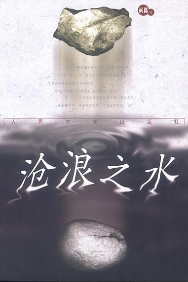

本文为官场小说《沧浪之水》的读后笔记，包括自己对于全书内容的总结概括以及个人感想，和大家分享。

内容梗概
沧浪之水是一部描写官场文化、阐述为官之道、揭露社会生存法则的一本小说，书中讲述了一个生长于农村的青年池大为，从大学时代的求学历程，到进入省卫生厅为官的起伏历程和心理变化。
父亲本是城里有名望的医生，因在文革中正义直言而遭迫害，来到小山村成为了一名赤脚医生，一生再没有能够回到城里。父亲的正直善良在池大为心中种下了善的种子，父亲留下的一册《历代名人图鉴》，也承载了这个家庭对于人生原则和公平正义的诚挚守护。
一辈子在乡村行医，终于盼到了儿子考上北京的大学，然而在录取通知书来到的那天，这位父亲却突发疾病离开了人世。池大为带着父亲的精神和嘱托，远赴他乡求学，开始了自己丰富而又无奈的新生活。研究生毕业后，由于不肯妥协，和挚爱的女友分手，也错失留在北京的机会，只得到省里的中医研究院去任职。好在省卫生厅马厅长认为他是研究生毕业，较为看好，所以留了他在卫生厅发展。
一入官场深似海，最初带给池大为冲击的还只是同一个办公室的同事丁小槐，这个丁小槐阿谀逢迎，极尽谄媚之技，为了自己的利益与周围人勾心斗角。然后渐渐的，厅里巨额无度的开支，庶民因病走投无路的自杀，太多的人和事带给了池大为更深刻的冲击，内心的刚正和善良告诉他不能屈从于这样的环境，他选择了在民主生活会上想马厅长和同志们直言心中的不满，但是得到的不是同志们的理解和支持，而是异口同声的批评和指责，甚至失去了在厅里核心部门的职位，调到清水衙门中医协会，冷板凳一坐就是十多年。
仕途的失败和对原则的追求，池大为毫不犹豫的选择的后者，他似乎愿意一辈子清贫，也要保持那份心安。生活是残酷的，他可以不在乎别人的冷落轻视和经济上的拮据，但当他结婚后妻子都没法买一件好点的衣服，当妻子即将临产还要挤着公交车到很远的医院上班而无法调动，当孩子出生却仍然只能住在单人宿舍，当丁小槐都蹭蹭蹭地爬到了副处，当儿子烫伤急救却拿不出钱时还要求丁小槐的一个电话，当儿子进不了省机关幼儿园还需要暴发户妹夫的运作，他再也不可能不在乎了。
池大为知道自己必须改变了，这个社会就是弱肉强食，全靠运作，自己对公平正义的执念崩塌了。从妻子高超的打针技术救了马厅长的孙女为突破，池大为一步一步的改变了自己，他学会了说假话，学会了看脸色，学会了两面三刀，更重要的是学会了野心，他开始享受那种“被觉得很重要”的感觉，而这种感觉是通过什么手段才得到的，他已经不关心了。有了厅长的提携，再加上行政和业务两手抓，池大为进步飞快，科长、副处、处长、副厅、正厅，一路而来，似乎什么都有了，不可避免地也有了小三，有了对金钱的渴望。
池大为刚进卫生厅的时候，那些看不惯的人和事，到如今，对他来说已经是理所当然了，甚至已经成了他必须捍卫的东西。当新的年轻人和他当年一样锋芒毕露时，他也和当时的马厅长一样，将他调离，让他经历自己曾经遭受的一切。最后，作为家乡的典范荣归故里，在父亲墓前，他烧了那本《历代名人图鉴》，他明白屈原李白这等洁身自好之人，千年才有一两个，更多的人被残酷的现实压迫的支离破碎，淹没在历史长河里。他说即使不得已要去遵守官场的规则，他也是农村的孩子，会有平民意识，只是一旦身处其位，或许也只能是身不由己。
读后感悟
我自己断然不会主动去读官场小说，在朋友的再三推荐下才勉强翻开来看。我一直觉得读书就是融入到主人公的生活，跟他去经历一场人生，因此书中最初描写的那些官场丑态和人性险恶，让我焦躁难安，实在难以继续读下去。几次搁置，这次终于读完。
书中的描写周详细腻，不仅描绘了官场的等级观念和明争暗斗，还生动传神地刻画了主人公丰富的思想活动和心理斗争历程，将官场规则和铁律用一个个鲜活的事例展现在我们面前。虽然文学作品会有突出和强烈对比的手法，但是不得不承认作品所述就是这个社会真正的面貌，很多刚毕业的年轻人都是不怕虎的初生牛犊，以天下为己任，丝毫不肯放下心中的信仰和高洁，结果被现实撞得头破血流，然后才开始领悟到这个社会的游戏规则，最终也不得不变得圆滑势力，成为当初的自己最讨厌的那种人。
我知道，书中描述的那个社会和官场文化没错，主人公没错，那些小人没错，领导们更没错，因为这就是现实，无论对错。刘慈欣在《时间移民》中描述了一个镜像世界，通过超弦计算机可以精确的模拟地球的演化，从而可以看到在任何时间任何地点发生的任何事情，在这样一个世界中，善良绝对的压制邪恶，人类社会本应进化成为一种理想化的状态，但是它却出人意料的衰亡了。这很好理解，当一个社会完全没有了个人的欲望，那么他也就失去了进化的动力，失去了多彩的文明。有时候我们咒骂着可恶的社会，不屑于迎合这不公的规则，但是不得不承认这就是历史走出来的路，我们是没有选择的。
不得不承认，现在的我仍然是内心过于高贵的人，看到了太多，也经历了太多形式化、虚荣化的东西，憋着一口闷气无法纾解。但是一句“以后坚决不做行政”就能让自己摆脱吗，或许只是痴人说梦。有些规则是官场的，但也同样适用于整个社会，自己孑然一身时还有能力去逃避，但是当你被背负着父母的期盼、家庭的责任时，自己所坚持的一些原则便荡然无存，只得融入于社会规则，放下心中的高贵。
身处社会规则之中，最初的隐忍和伪装，终究会慢慢蚕食心中本原的善念，很多人都变成了彻头彻尾的利己主义者，却浑然不知。书中的池大为是这样，他的妻子更是这样，他们是如何从最为虔诚的社会公正守护者变成最后的样子的呢。生活的碰壁，现实的冲击，这些诚然是充分的理由，也是我们每一个人都不能免俗的地方，好在他们终究还是有一点点底线的。只是我想，也有人能够在大环境中游刃有余，而且也可以做到与人为善，而这或许就是艺术所在吧。